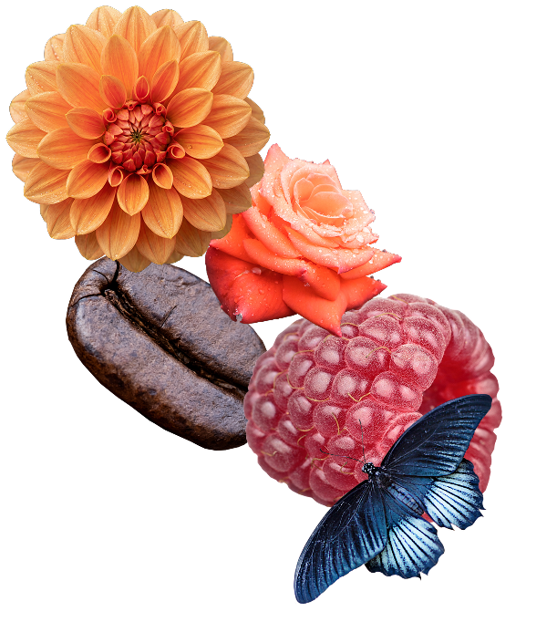

01
Brennweite sehen
Erkenne, wie sich Nähe, Raumgefühl und Bildwirkung verändern, sobald du den Blickwinkel bewusst verschiebst.
 Belichtungszeit
ISO
Blendwert
Belichtungszeit
ISO
Blendwert
Fotografie ist mehr als das Festhalten eines Augenblicks — sie ist der
magische Moment, in dem die Welt aufleuchtet wie ein entdeckter verborgener
Schatz. Sie fängt Licht, Bewegung, Stille und Gefühl ein und verwandelt sie
in etwas Bleibendes.
Wer fotografiert, lernt wirklich zu sehen: die kleinen Wunder im
Alltäglichen und die Schönheit in flüchtigen Augenblicken. So wird aus
einem Moment ein Fund, aus einem Bild ein Gefühl, aus etwas Flüchtigem
etwas Kostbares.
„Fotografie ist der Moment, in dem die Bedeutung eines Ereignisses erfasst wird.“

INTENTION
Diese Seite wurde gestaltet, um fotografische Grundlagen nicht nur zu erklären, sondern sichtbar zu machen. Statt abstrakter Begriffe kannst du Wirkung, Licht und Perspektive direkt vergleichen und selbst steuern.
01
Erkenne, wie sich Nähe, Raumgefühl und Bildwirkung verändern, sobald du den Blickwinkel bewusst verschiebst.
02
Beobachte, wie Helligkeit, Kontrast und Stimmung eine Szene prägen und welchen Unterschied kleine Anpassungen machen.
03
Probiere Einstellungen aus und entwickle ein Gefühl dafür, warum ein Bild ruhig, nah, offen oder dramatisch wirkt.
Hier kannst du Kameraeinstellungen selbst steuern und ihre Wirkung auf das Bild direkt erleben, statt nur darüber zu lesen.
Jetzt Testen →THEMEN DIESER SEITE
Die Website führt durch die wichtigsten Grundlagen der Fotografie — von Bildaufbau und technischer Basis bis hin zu interaktiven Simulationen und realen Lichtsituationen. Jeder Bereich öffnet einen anderen Blick auf das Bild
01
Verstehe die fotografischen Prinzipien hinter Schärfe, Licht, Belichtung und Bildwirkung in ruhigen, klaren Schritten.
Jetzt Testen →02
Erfahre, wie Perspektive, Linien, Ausschnitt und Balance darüber entscheiden, wie ein Bild gelesen wird.
Jetzt Testen →03
Teste Werte selbst und beobachte direkt, wie sich Brennweite, Blende oder andere Parameter auf das Bild auswirken.
Jetzt Testen →04
Erfahre, wie Perspektive, Linien, Ausschnitt und Balance darüber entscheiden, wie ein Bild gelesen wird.
Jetzt Testen →PROFIL
Ich beschäftige mich gern mit Fotografie, weil mich besonders interessiert, wie Licht, Perspektive und kleine Entscheidungen die Wirkung eines Bildes verändern. Diese Seite ist aus dem Wunsch entstanden, genau das verständlicher und visueller zu zeigen.
Wer ich bin
Ich mag es, Dinge klar und ruhig zu erklären — am liebsten so, dass man sie nicht nur liest, sondern direkt versteht. Bei Fotografie finde ich spannend, dass Technik und Gefühl hier zusammenkommen und aus kleinen Veränderungen eine ganz andere Bildwirkung entsteht.
Warum ich das gemacht habe
Ich wollte eine Seite bauen, die Fotografie nicht trocken behandelt, sondern als etwas Erlebbares zeigt. Statt nur Begriffe aufzuzählen, sollen Besucher ausprobieren, vergleichen und besser sehen können, wie Bilder entstehen.
01
klare Gestaltung
02
ruhige Erklärung
03
selbst ausprobieren
ZUM SCHLUSS
Draußen wartet eine Welt voller Motive, Licht und schöner Details. Jetzt geht es nicht mehr nur ums Lesen, sondern darum, die anderen Seiten zu nutzen, tiefer einzusteigen und wirklich loszulegen.
01
Starte bei den Unterseiten, arbeite dich durch die Grundlagen und mach die Inhalte Schritt für Schritt zu deinem eigenen Wissen.
Zu den Grundlagen →02
Vergleiche, probiere aus und schau dir an, wie sich einzelne Entscheidungen direkt auf das Bild auswirken.
Zur Simulation →03
Nimm das, was du gelernt hast, mit nach draußen und setz es direkt in echte Bilder um.